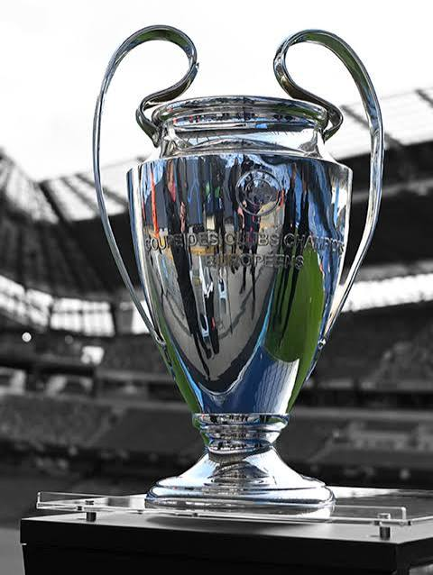

1. Naciendo como Gigante (1902 - 1943)
Tras la fundación oficial del Madrid Foot-Ball Club en marzo de 1902 por Julián Palacios y los hermanos Padrós, la entidad no tardó en alzarse como referente del fútbol en España. Conquistó de forma consecutiva las Copas del Rey de 1905, 1906, 1907 y 1908, impulsando además la creación de la Real Federación Española de Fútbol.
En junio de 1920, la Casa Real otorgó la distinción "Real" al club, permitiéndole lucir la corona en su escudo. Durante los años 30, bajo la batuta del mítico guardameta Ricardo Zamora y el defensa Jacinto Quincoces, el club dominó el primer campeonato de Liga (1931-32) sin perder un solo encuentro, consolidando una férrea mentalidad defensiva que se mantendría en la identidad del equipo.
2. Santiago Bernabéu y la Revolución Mundial (1943 - 1960)
En 1943, Santiago Bernabéu asumió la presidencia tras años difíciles de posguerra. Su visión revolucionaria cambió el fútbol para siempre: construyó un estadio con capacidad para más de 75.000 espectadores (inaugurado en 1947 como Nuevo Chamartín) y proyectó la internacionalización de la entidad.

En 1953 aterrizó Alfredo Di Stéfano, el "Saeta Rubia", cuya versatilidad táctica redefinió el juego de ataque. Junto a figuras de la talla de Ferenc Puskás, Francisco Gento, Raymond Kopa y Héctor Rial, el Real Madrid impulsó la creación de la Copa de Clubes Campeones Europeos en 1955.
El dominio fue absoluto: el club conquistó las cinco primeras ediciones consecutivas (1956 contra el Stade de Reims, 1957 contra la Fiorentina, 1958 contra el Milan, 1959 contra el Reims y 1960 en una inolvidable goleada 7-3 al Eintracht Frankfurt). Este ciclo dorado culminó con la victoria en la primera Copa Intercontinental en 1960 ante Peñarol.
3. Generación Ye-Yé y la Quinta del Buitre (1960 - 1990)
Tras la retirada gradual de la primera gran generación, Paco Gento capitaneó al **"Madrid Ye-Yé"**, un bloque compuesto por futbolistas exclusivamente nacionales como Amancio Amaro, Pirri, Grosso y Manuel Sanchís Martínez. En 1966 doblegaron al Partizán de Belgrado en Bruselas para conquistar la Sexta Copa de Europa.
A mediados de los años 80 irrumpió desde la cantera la célebre **Quinta del Buitre**, integrada por Emilio Butragueño, Míchel, Manolo Sanchís (hijo), Martín Vázquez y Miguel Pardeza. Acompañados por goleadores emblemáticos como Hugo Sánchez y Santillana, desplegaron un fútbol vistoso que significó cinco Ligas consecutivas (1986-1990) y dos Copas de la UEFA con remontadas nocturnas inolvidables en el Bernabéu.
4. El Reencuentro Continental y los Galácticos (1990 - 2009)
El 20 de mayo de 1998 en Ámsterdam, con Jupp Heynckes en el banquillo, un gol de Predrag Mijatović devolvió la gloria europea tras 32 años de sequía al ganar la Séptima ante la Juventus. Dos años después, bajo el mando de Vicente del Bosque y el liderazgo de Raúl González y Fernando Redondo, se levantó la Octava en París (3-0 ante el Valencia).
Con la llegada de Florentino Pérez a la presidencia en el año 2000, dio inicio la era de los **Galácticos**. El fichaje de Luís Figo, Zinedine Zidane, Ronaldo Nazário y David Beckham posicionó al Real Madrid como la marca deportiva más relevante del planeta. Esta etapa dejó para el recuerdo la Novena Champions en 2002 gracias al histórico gol de volea de Zidane en Glasgow frente al Bayer Leverkusen.
5. La Era de la Resiliencia: De la Décima a la Decimocuarta (2010 - Actualidad)
La incorporación de Cristiano Ronaldo en 2009 marcó el comienzo de una era goleadora sin precedentes (451 goles en 438 partidos). Tras romper récords en torneos nacionales con la "Liga de los 100 puntos" en 2012 con José Mourinho, Carlo Ancelotti guio al equipo a la anhelada **Décima Copa de Europa** en Lisboa (2014) con el icónico cabezazo de Sergio Ramos en el minuto 92:48.
Entre 2016 y 2018, con Zinedine Zidane como director técnico, el club concretó una hazaña inédita en la era moderna: el **tricampeonato consecutivo de la UEFA Champions League** (Undécima en Milán, Duodécima en Cardiff y Decimotercera en Kiev), con un bloque compuesto por Luka Modrić, Toni Kroos, Karim Benzema, Sergio Ramos y Casemiro.
En las temporadas recientes, el equipo ha mantenido su competitividad continental con las épicas conquistas de la Decimocuarta (2022) y Decimoquinta (2024), demostrando una capacidad de remontada única mientras finaliza la vanguardista remodelación del Estadio Santiago Bernabéu.